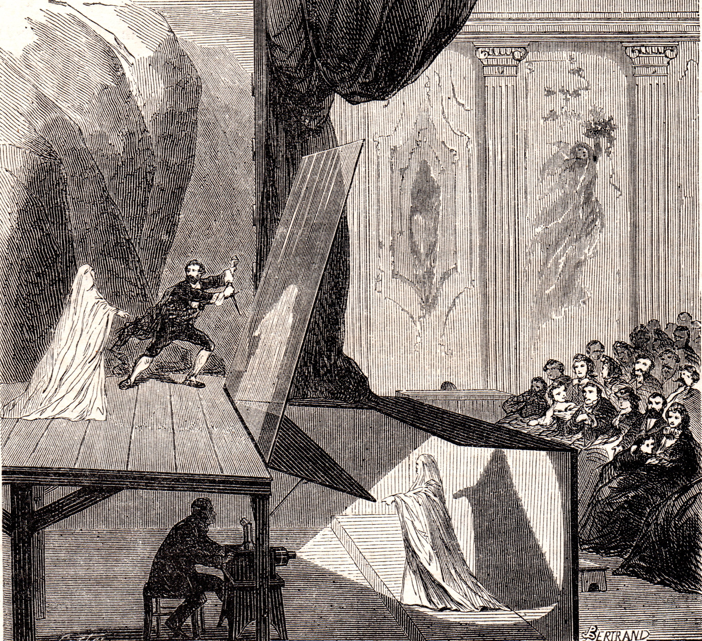

Holograms in Your Pocket
🚀 Bringing the Magic of Pepper’s Ghost to Your Phone!
👻 What is Pepper’s Ghost?
✨ A 19th-century illusion that makes objects appear as **ghostly projections**.
- Invented by **John Henry Pepper** in 1862.
- Uses a **transparent surface** at an angle to reflect hidden objects.
- Originally used in **theater**—now seen in **holograms & live events**!
🔮 The tech behind **Tupac at Coachella & Hatsune Miku concerts**!
📜 The History of Pepper's Ghost

🔍 How Does It Work?
- Uses a transparent screen at an angle 📏
- Reflects an image that appears as a hologram ✨
- Modern versions use projectors and LCD screens in our case a Phone!
🛠️ Live Demo: Pepper's Ghost Effect
⚛️ The Science Behind It
Light reflection & refraction at 45° angles
Similar to **Heads-Up Displays (HUDs)** in cars
Uses **partial transparency** for realism
🛠️ Tech Stack Behind the Magic
- 📡 Open-Meteo – Real-time weather data API
- 🎨 Three.js – 3D graphics for web & mobile
- 📦 glTF – Efficient 3D model format
- 📱 WebXR – Immersive web experiences
- 💡 HTML, CSS, JavaScript – The foundation
🖥️ How the Code Works
import { PeppersGhostEffect } from 'three/addons/effects/PeppersGhostEffect.js';
const effect = new PeppersGhostEffect(renderer);
effect.setSize(window.innerWidth, window.innerHeight);
effect.cameraDistance = 5;
✨ Uses a custom shader for a floating holographic effect.
🌤️ Using Weather Data to Drive Holographic Effects
🔧 Fetching real-time weather information from the Open-Meteo API to adjust hologram visuals:
- 🌡️ Fetching current weather data (e.g., temperature, cloud cover, etc.)
- 💨 Changing hologram effects based on weather conditions (e.g., sun, rain, or storms)
- 🌈 Updating colors, lighting, and animations to reflect the weather
🎮 This makes the holographic experience interactive and responsive to the environment around you!
🤯 Mind-Blowing "What Ifs"!
- What if we could create **real-life Star Wars holograms** that interact with us in real time? 👾
- What if we could make **floating VR displays** that blend the virtual and real world seamlessly? 🌐
- What if we could **holographically project historical figures** to have live conversations with them? 🗣️
🚀 These ideas could push holography beyond what we think is possible today!